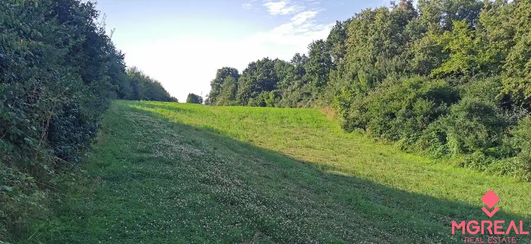
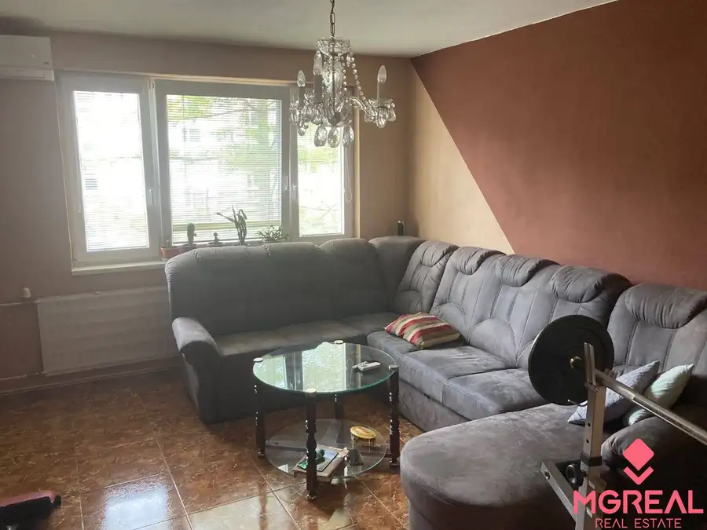
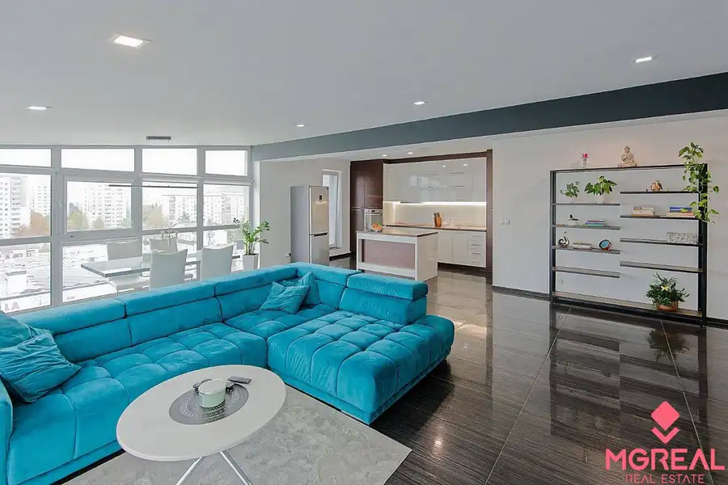
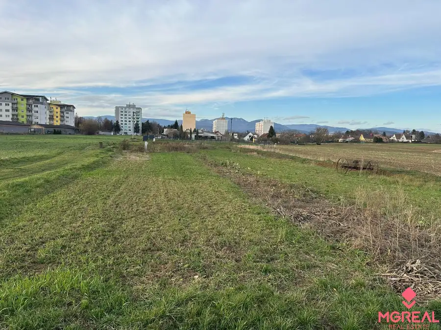
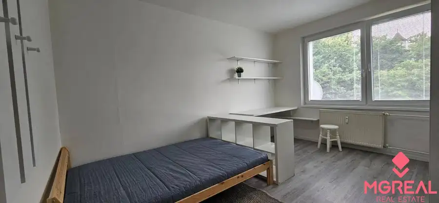
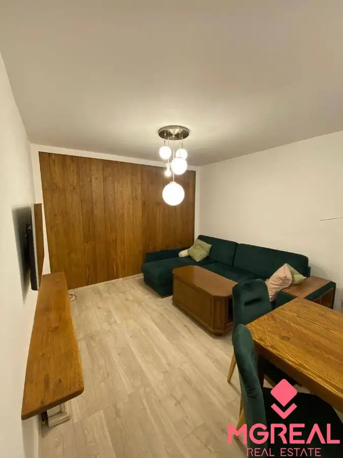

Aktuálna ponuka
Nehnuteľnosti, ktoré ponúkam
6 nehnuteľností na predaj a prenájom. Vyberte typ, alebo napíšte lokalitu.
6 z 6 ponúk

Pozemok6 19 159 €Rekreačný pozemok Nemšová Nemšová 1127 m² Ponúkame Vám na predaj rekreačný pozemok v obci Nemšová. Plocha pozemku je 1127m2. Nachádza sa v krásnom prostredí, vhodný pre ľudí ktrorý majú radi…
Byt10 117 000 €3i byt ulica Cyrila a Metoda Bánovce nad Bebravou Bánovce nad Bebravou 3-izbový63 m²7. podlažie Ponúkame Vám na predaj 3 izbový byt Bánovce nad Bebravou, Cyrila A Metoda. Plocha: úžitková 63m2 Stav objektu: kompletná rekonštrukcia. Byt sa…
Byt8 320 000 €Krásný 3-izbový byt v centre Dubnice nad Váhom Dubnica nad Váhom 3-izbový125 m²7. podlažie Nadštandardný 3-izbový byt v centre Dubnice nad Váhom Ak hľadáte bývanie, ktoré spája komfort, priestrannosť a výbornú lokalitu, táto ponuka vás…
Pozemok4 171 950 €Jedinečný stavebný pozemok v ILAVE Ilava 905 m² Ponúkame na predaj slnečný a rovinatý pozemok o rozlohe 905m2 v tichej lokalite, ktorý je zároveň len 5 minút peši od centra mesta, školy aj škôlky.…
Byt7 Cena dohodouNa prenájom 1,5 izbovy byt Dubnica nad Váhom Dubnica nad Váhom 1-izbový36 m² Ponúkame Vám na prenájom 1,5 izbový byt v Dubnici nad Váhom na ulici Pod kaštieľom o rozlohe 36m2. Byt sa nachádza v prerobenom bytovom dome na 4…
Byt10 295 000 €Nadštandardný 3 izbový byt v Piešťanoch Piešťany 3-izbový95.93 m²1. podlažie Hľadáte bývanie, ktoré kombinuje komfort, priestor a výbornú lokalitu? Práve ste ho našli! Ponúkame Vám na predaj štýlový 3-izbový byt s rozlohou…Tomuto výberu zatiaľ nezodpovedá žiadna ponuka. Napíšte mi, čo hľadáte.